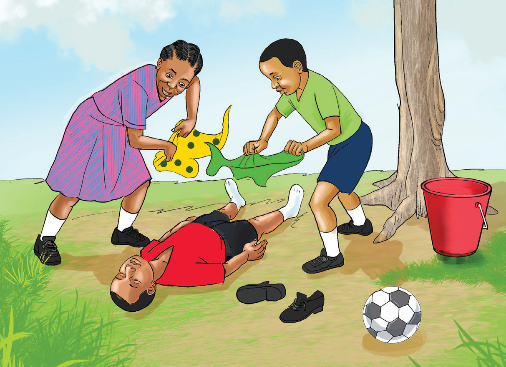

kisimani. Amani alichukua ndoo na kuelekea kisimani. Rafiki zake Amani nao waliaamua kuongozana naye kuelekea kisimani. Wakiwa njiani, Amani akamwona nyoka mkubwa mweusi amekatisha.
Amani alishituka, akaanguka chini na kuzirai. Rafiki zake walishituka na kuanza kumwita Amani! Amani! Lakini Amani hakuweza kuamka. Johari na Jumanne walimsogeza pembeni wakamlaza chali chini ya mti palipokuwa na kivuli. Chunguza Kielelezo namba 2.

Walianza kumpepea kwani alikuwa akitokwa na jasho mwili mzima na kupumua kwa tabu. Johari alikimbia kwenda kutoa taarifa kwa mama yake Amani.
Mama yake alipofika walimchukua na kumpeleka hospitalini. Daktari aliwaambia “Amani anaendelea vizuri ila alikuwa amepata mshtuko uliomsababishia kuzirai. Daktari aliwaelezea sababu za mtu kuzirai.” Aliwaambia, “Mtu huweza kuzirai kwa sababu ya maumivu makali ya mwili.” Hali kadhalika, kupata mshtuko wa moyo kutokana na habari njema au mbaya. Pia, kutoka damu kwa wingi, uchovu uliokithiri na kufanya kazi ngumu bila kupumzika husababisha mtu kuzirai.
Daktari alisisitiza kuwa, kumsaidia mtu aliyezirai inakupasa ufuate hatua zifuatazo: mlaze chali mahali palipo na hewa ya kutosha. Legeza nguo zake shingoni, kifuani na kiunoni ili kumpa ahueni.